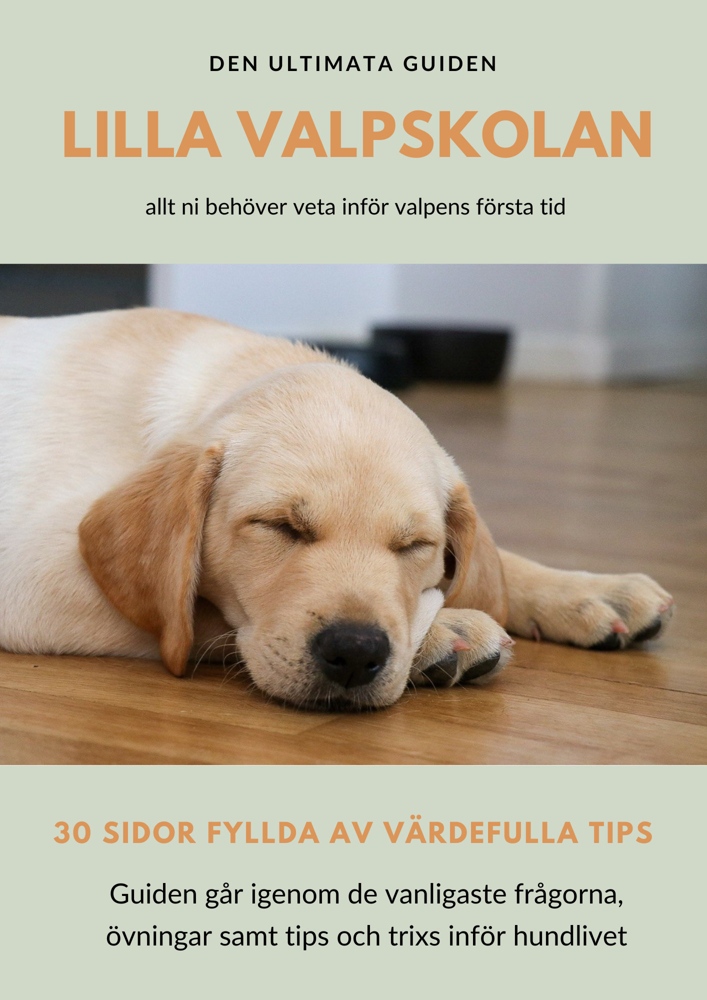

Lilla valpskolan
Har du en valp hemma eller påväg att skaffa?
Grattis! Valptiden är full av bus, upptäckarglädje och små tassar som lämnar stora avtryck i våra hjärtan. Men kan också innebära många frågor, oväntade utmaningar och en hel del tålamod. Med våran guide Lilla valpskolan hjälper vi dig navigera genom valpens första tid och ger er verktygen att skapa en grund för er framtid tillsammans. I guiden hittar ni inspiration, vägledning och praktiska tips som gör det lite enklare att förstå din valp, möta dess behov och bygga en fin relation från första dagen.
- Hur du skapar trygghet och bra rutiner i valpens vardag.
- Att förstå valpens beteende och behov.
- Hur ni kan komma igång med vardagsträningen på ett positivt sätt.
- Att få verktygen att lägga grunden för goda vanor, samarbete och tillit.
Det här kan vi hjälpa till med:
Små steg gör stor skillnad. Du behöver inte kunna allt från början. Med kärlek, tålamod och rätt vägledning kan ni utvecklas tillsammans, en dag i taget. För livet med valp handlar inte om att vara perfekt - utan om att växa tillsammans!
